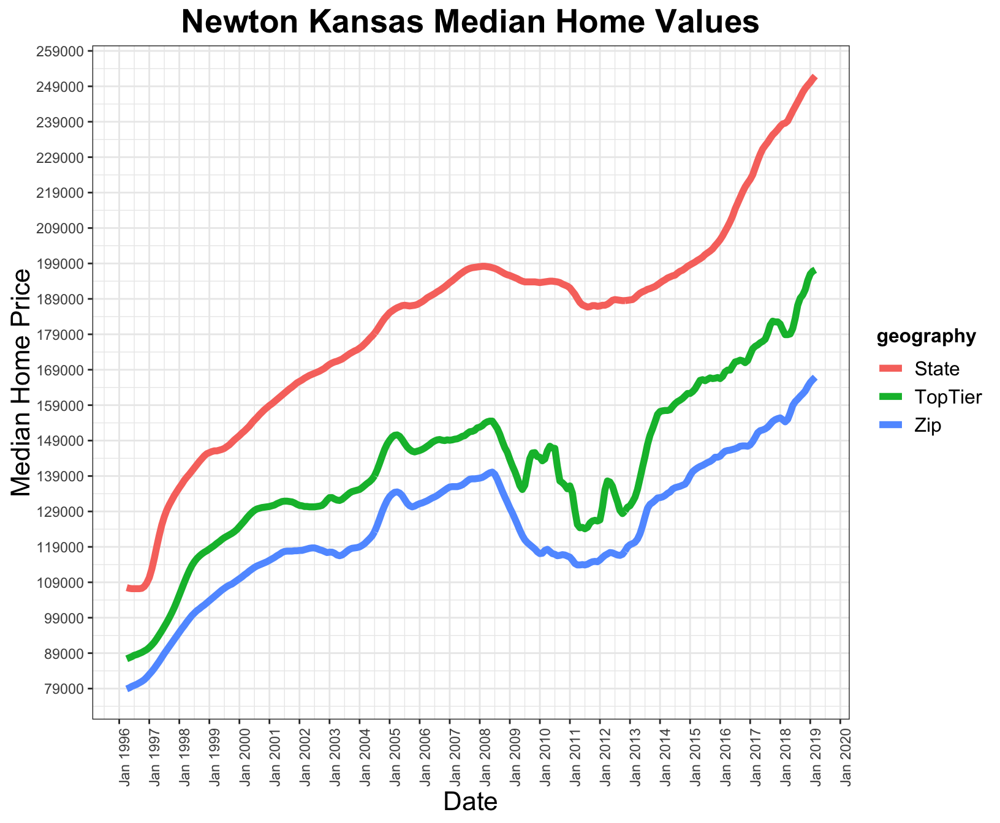

vignettes/zillow-vignette.Rmd
zillow-vignette.RmdZillow has collected and analyzed enormous amounts of property data in order to help prospective buyers, sellers, and renters make informed decisions in their real estate transactions. Zillow has been kind enough to make much of this data available to the public through its APIs and other locations on their site. This vignette is an introduction to the realEstAnalytics package, which contains several functions that supply calls to Zillow’s Real Estate API. The returned data are available in their raw XML form, or in a tidy format that allows for quick and clean manipulation and analysis of the data.
The realEstAnalytics package is hosted on github. It can be installed with the devtools package, and then loaded as with any other R package.
#installing and loading realEstAnalytics
devtools::install_github('xiyuansun/realEstAnalytics')
library(realEstAnalytics)realEstAnalytics does not have any dependencies other than the latest version of R, but does import functions from a number of other packages to aid in reading and tidying the XML data. See the documentation for this list, and be careful with the namespaces of any other packages you may be using in conjunction with realEstAnalytics.
Before you can make any calls to any of Zillow’s APIs, you must register with Zillow by signing up at https://www.zillow.com/howto/api/APIOverview.htm (make sure you read the Terms of Service!). Once you have registered, Zillow will send you a unique API key, formally called a ZWSID. Keep this in a safe, non-public place to be referenced later.
Before we go further, it should be noted that Zillow will prevent excessive calls, and thus may block your ZWSID if you issue more than 1,000 API requests in a day (so be careful!).
Once you have obtained your ZWSID, you can set it in your R session with the zillow_web_service_id() function and retrieve it with getOption('ZillowR-zws_id') :
#set the ZWS_ID
set_zillow_web_service_id('YOUR_API_KEY')#retrieve the current ZWS_ID in use
zapi_key = getOption('ZillowR-zws_id')It is helpful to set this when you start your session, so that you do not need to continually reference it if making many calls to the API.
GetUpdatedPropertyDetails,GetDeepSearchResults and GetDeepSearchResults_dataframe
Suppose we’re interested in moving to Newton, KS, and are considering a number of different homes in the area for purchase. One particular home we’re interested in is located at 600 S. Quail Ct. in Newton. We can obtain information on the property using the GetDeepSearchResults function, which will pull the data corresponding to all of the Zillow Property IDs at a given address.
GetDeepSearchResults('600 S. Quail Ct.', city='Newton',state='KS', zipcode=NULL,
api_key=getOption('ZillowR-zws_id'))
#> # A tibble: 1 x 26
#> address zipcode city state lat long region_name region_id type
#> <chr> <chr> <chr> <chr> <dbl> <dbl> <chr> <chr> <chr>
#> 1 600 S ~ 67114 Newt~ KS 38.0 -97.3 Newton 19619 city
#> # ... with 17 more variables: zestimate <dbl>, zest_lastupdated <date>,
#> # zest_monthlychange <dbl>, zest_percentile <dbl>, zestimate_low <dbl>,
#> # zestimate_high <dbl>, zpid <chr>, bathrooms <dbl>, bedrooms <dbl>,
#> # finishedSqFt <dbl>, lastSoldDate <chr>, lastSoldPrice <dbl>,
#> # lotSizeSqFt <dbl>, taxAssessment <dbl>, taxAssessmentYear <dbl>,
#> # totalRooms <dbl>, yearBuilt <dbl>The function returns a dataframe with variables corresponding to address and geographic location, as well as the property’s Zillow property ID (zpid) and information corresponding to the Zestimate, which is Zillow’s proprietary algorithm for estimating the property value. Additionally, there are variables corresponding to the living space of the house (bedrooms,bathrooms,finishedSqFt, etc.), and property tax information. For example, our property has a Zillow estimated value of $230,830, which is quite close to the last sale price of $230,000 and well above the assessed property tax value of $214,800.
Note that we did not need to supply a zip code argument. In order for DeepSearchResults to work, we need only to specify either the city/state combination OR the zipcode. Sometimes it may help the search to be more specific by specifying the zipcode. The following code will produce the same result using only zipcode but no city/state combination:
GetDeepSearchResults('600 S. Quail Ct.', zipcode=67114,
rentzestimate=TRUE, api_key=getOption('ZillowR-zws_id'))
#> # A tibble: 1 x 31
#> address zipcode city state lat long region_name region_id type
#> <chr> <chr> <chr> <chr> <dbl> <dbl> <chr> <chr> <chr>
#> 1 600 S ~ 67114 Newt~ KS 38.0 -97.3 Newton 19619 city
#> # ... with 22 more variables: zestimate <dbl>, zest_lastupdated <date>,
#> # zest_monthlychange <dbl>, zest_percentile <dbl>, zestimate_low <dbl>,
#> # zestimate_high <dbl>, rentzestimate <dbl>, rent_lastupdated <date>,
#> # rent_monthlychange <dbl>, rentzestimate_low <dbl>,
#> # rentzestimate_high <dbl>, zpid <chr>, bathrooms <dbl>, bedrooms <dbl>,
#> # finishedSqFt <dbl>, lastSoldDate <chr>, lastSoldPrice <dbl>,
#> # lotSizeSqFt <dbl>, taxAssessment <dbl>, taxAssessmentYear <dbl>,
#> # totalRooms <dbl>, yearBuilt <dbl>Additionally, we set rentzestimate=TRUE in the previous example, which tells the API call to return the Zillow estimated rental price data for the property in addition to the Zestimate for the property.
One note of caution when using GetDeepSearchResults is that it will return the results for ALL of the Zillow property IDs at an address, which can cause difficulties if one is trying to get results for multiple addresses at once, such as using the function in conjunction with the apply() family of functions. To avoid this, one may be able to use GetDeepSearchResults_dataframe, which takes a data frame of addresses as its arguments.
Suppose we want to look at the results for several results at once, and we have the data stored in a data frame named newtonaddresses in our environment. To get the search results for the full data frame, all we need to do is supply GetDeepSearchResults_dataframe with the data and the column numbers corresponding to the geographic information:
#there are 32 addresses, some in different zipcodes, to look up
head(newtonaddresses)
#> # A tibble: 6 x 4
#> address zipcode city state
#> <chr> <chr> <chr> <chr>
#> 1 2137 Beltline 67114 Newton KS
#> 2 410 Victoria Rd 67114 Newton KS
#> 3 2801 Goldenrod Rd. 67117 North Newton KS
#> 4 105 S Logan St. 67114 Newton KS
#> 5 839 Meadowlark Ln 67114 Newton KS
#> 6 1412 W. 8th St. 67114 Newton KS
#GetDeepSearchResults_dataframe will get the info for us:
GetDeepSearchResults_dataframe(.df=newtonaddresses,
col.address=1 , col.zipcode=2 , col.city=3 , col.state=4,
api_key=getOption('ZillowR-zws_id'))
#> # A tibble: 37 x 26
#> address zipcode city state lat long region_name region_id type
#> <chr> <chr> <chr> <chr> <dbl> <dbl> <chr> <chr> <chr>
#> 1 2137 B~ 67114 Newt~ KS 38.0 -97.4 Newton 19619 city
#> 2 410 Vi~ 67114 Newt~ KS 38.0 -97.3 Newton 19619 city
#> 3 2801 G~ 67117 Nort~ KS 38.1 -97.4 North Newt~ 46801 city
#> 4 105 S ~ 67114 Newt~ KS 38.0 -97.3 Newton 19619 city
#> 5 839 Me~ 67114 Newt~ KS 38.0 -97.3 Newton 19619 city
#> 6 1412 W~ 67114 Newt~ KS 38.1 -97.4 Newton 19619 city
#> 7 919 N ~ 67114 Newt~ KS 38.1 -97.3 Newton 19619 city
#> 8 2112 B~ 67114 Newt~ KS 38.0 -97.4 Newton 19619 city
#> 9 3000 A~ 67114 Newt~ KS 38.0 -97.3 Newton 19619 city
#> 10 612 Qu~ 67114 Newt~ KS 38.0 -97.3 Newton 19619 city
#> # ... with 27 more rows, and 17 more variables: zestimate <dbl>,
#> # zest_lastupdated <date>, zest_monthlychange <dbl>,
#> # zest_percentile <dbl>, zestimate_low <dbl>, zestimate_high <dbl>,
#> # zpid <chr>, bathrooms <dbl>, bedrooms <dbl>, finishedSqFt <dbl>,
#> # lastSoldDate <chr>, lastSoldPrice <dbl>, lotSizeSqFt <dbl>,
#> # taxAssessment <dbl>, taxAssessmentYear <dbl>, totalRooms <dbl>,
#> # yearBuilt <dbl>If we want to find out more characteristics of the property that we could not find with GetDeepSearchResults, the function GetUpdatedPropertyDetails may help us out. It takes a Zillow Property ID and returns much of the non-value information from the search functions, as well as additional information about parking, HVAC, appliances, and more:
exdetails <- GetUpdatedPropertyDetails(zpid='93961896' ,
api_key= getOption('ZillowR-zws_id'))
names(exdetails)
#> [1] "address" "zipcode" "city"
#> [4] "state" "lat" "long"
#> [7] "useCode" "bedrooms" "bathrooms"
#> [10] "finishedSqFt" "lotSizeSqFt" "yearBuilt"
#> [13] "numFloors" "numRooms" "basement"
#> [16] "roof" "exteriorMaterial" "parkingType"
#> [19] "heatingSources" "heatingSystem" "coolingSystem"
#> [22] "appliances" "floorCovering" "rooms"
#> [25] "currentMonth" "total"GetComps and GetDeepComps
For every property, Zillow calculates a “Compscore” of comparable properties in the area. The ‘Compscore’ attribute is representative of the relevance of each property to the target, with a score of 0 being the closest and higher Compscores being less relevant. We have two options for API calls: GetComps, which retrieves only geographic, Zestimate, and Compscore information for the comparables, and GetDeepComps, which returns everything from GetComps as well as the specific property data that one would acquire through GetDeepSearchResults.
We can retrieve up to 25 comparable properties with the count argument, although one should be careful not to exceed Zillow’s API limit by calling this repeatedly. Note here that, instead of an address, these functions take the specific Zillow property ID (zpid) for the property, which can be found by first calling GetDeepSearchResults for the address.
Are we getting a good deal on our home at 600 S. Quail Court? We can look at the information on comparable recently sold properties in the area:
#retrieve the zpid from GetDeepSearchResults
zpidex <- GetDeepSearchResults('600 S. Quail Ct.', zipcode=67114,
rentzestimate=TRUE, api_key=getOption('ZillowR-zws_id'))$zpid
#GetComps for the '600 S. Quail Ct.' address
GetComps(zpidex, count=10, rentzestimate=TRUE, api_key = getOption('ZillowR-zws_id')) %>%
dim()
#> [1] 11 22
#GetDeepComps returns the same information as GetComps, with additional property data
deepcomps <- GetDeepComps(zpidex, count=10, rentzestimate=FALSE, api_key = getOption('ZillowR-zws_id'))
str(deepcomps)
#> Classes 'tbl_df', 'tbl' and 'data.frame': 11 obs. of 27 variables:
#> $ address : chr "600 S Quail Ct" "919 N Blaine St" "2137 Beltline" "2112 Beltline Ct" ...
#> $ zipcode : chr "67114" "67114" "67114" "67114" ...
#> $ city : chr "Newton" "Newton" "Newton" "Newton" ...
#> $ state : chr "KS" "KS" "KS" "KS" ...
#> $ lat : num 38 38.1 38 38 38 ...
#> $ long : num -97.3 -97.3 -97.4 -97.4 -97.3 ...
#> $ region_name : chr "Newton" "Newton" "Newton" "Newton" ...
#> $ region_id : chr "19619" "19619" "19619" "19619" ...
#> $ type : chr "city" "city" "city" "city" ...
#> $ zestimate : num 229365 86515 271009 199880 192078 ...
#> $ zest_lastupdated : Date, format: "2019-05-04" "2019-05-04" ...
#> $ zest_monthlychange: num -42 129 2114 1265 2485 ...
#> $ zest_percentile : num 96 48 98 93 92 86 84 98 98 97 ...
#> $ zestimate_low : num 213309 82189 257459 189886 182474 ...
#> $ zestimate_high : num 243127 90841 284559 209874 201682 ...
#> $ zpid : chr "1340244" "1339246" "109818062" "109782360" ...
#> $ compscore : num NA 16 10 11 6 6 9 7 6 5 ...
#> $ bathrooms : num 3 2 3 2 3 3 3 3 3 3 ...
#> $ bedrooms : num 4 3 6 3 4 3 4 4 5 4 ...
#> $ finishedSqFt : num 1726 1408 2669 1355 2570 ...
#> $ lastSoldDate : chr "06/01/2007" "10/18/2018" "06/15/2018" "09/21/2018" ...
#> $ lastSoldPrice : num 230000 NA 262900 193950 185000 ...
#> $ lotSizeSqFt : num 33024 13068 13503 11325 13939 ...
#> $ taxAssessment : num 214800 71200 228000 187430 171970 ...
#> $ taxAssessmentYear : num 2018 2018 2018 2018 2018 ...
#> $ totalRooms : num 8 5 18 5 10 11 7 7 7 7 ...
#> $ yearBuilt : num 1993 1964 2008 2017 1994 ...
summary(deepcomps$zestimate)
#> Min. 1st Qu. Median Mean 3rd Qu. Max.
#> 86515 178688 229365 213149 265037 271457GetZestimate
If you do not want all of the property information from GetDeepSearchResults, you can quickly retrieve the Zestimate and/or rent Zestimates of the property’s value with GetZestimate, using the Zillow property ID. This function will also take a vector of property IDs in the zpid argument if you want to retrieve more than one Zestimate at once:
#GetZestimate with a vector input
GetZestimate(zpids=c(zpidex,109818062,1341669,1341715) ,
rentzestimate=TRUE , api_key=getOption('ZillowR-zws_id'))
#> # A tibble: 4 x 20
#> address zipcode city state lat long region_name region_id type
#> <chr> <chr> <chr> <chr> <dbl> <dbl> <chr> <chr> <chr>
#> 1 600 S ~ 67114 Newt~ KS 38.0 -97.3 Newton 19619 city
#> 2 2137 B~ 67114 Newt~ KS 38.0 -97.4 Newton 19619 city
#> 3 410 Vi~ 67114 Newt~ KS 38.0 -97.3 Newton 19619 city
#> 4 2109 S~ 67114 Newt~ KS 38.0 -97.3 Newton 19619 city
#> # ... with 11 more variables: zestimate <dbl>, zest_lastupdated <date>,
#> # zest_monthlychange <dbl>, zest_percentile <dbl>, zestimate_low <dbl>,
#> # zestimate_high <dbl>, rentzestimate <dbl>, rent_lastupdated <date>,
#> # rent_monthlychange <dbl>, rentzestimate_low <dbl>,
#> # rentzestimate_high <dbl>Suppose we want to build a larger dataset based on only our original address. This would facilitate an analysis of recent property sales in the general area to gain insight into the housing market. Conveniently, many of the functions in the realEstAnalytics package either (i) allow for vector inputs of Zillow property IDs, or (ii) allow for easy implementation of mapping functions like apply() or purrr::map() to retrieve multiple pieces of data at once. Users familiar with the aforementioned mapping techniques should be able to see how one could (in theory) retrieve data on more than 100 properties in one stroke by applying a function to many property IDs at once, such as:
The above lapply() would take every Zillow property ID in ZPID-list and return 25 comparable properties’ information. While realEstAnalytics is not capable of restricting such a mass data pull, a few notes of caution are necessary:
Because of this, the authors of realEstAnalytics recommend only using the property information for a small number of homes at any given time. Anything larger than the packages sample data provided in newtonhouses puts the user at risk of trouble with Zillow. Just because you’re able to access data, does not mean you should abuse your priveleges.
GetChart
You can obtain a URL for a the Zestimates for a property with GetChart. The return from the API is a link to the image of the chart, which can be displayed in R with whatever package you prefer. Sometimes the URLs need some cleaning in order to correctly be able to read the image. For example, a 10 year historical valuation chart for our property can be called with:
library(XML)
#Get Chart returns a list with the API's response
#The chart URL is in the `response` element in the `url` attribute
chartex <- GetChart(zpid = 93961896, unit_type = 'dollar', width = 600, height = 300,
chartDuration = '10years', zws_id = getOption('ZillowR-zws_id'))
XML::names.XMLNode(chartex$response)
#> url graphsanddata
#> "url" "graphsanddata"Get_ZHVI_series and Get_rental_listings
Zillow also supplies some of its research data and aggregated listings data, hosted at https://www.zillow.com/research/data/ . These are static .csv files and don’t require a Zillow Web Service ID for download, however the realEstAnalytics package supplies functions that can read these files directly into R and save you the time of downloading and saving them locally. Get_ZHVI_series and Get_rental_listings read the .csv files and return a dataframe for a variety of different series for a specified geography. The options available for these two functions are listed below.
get_ZHVI_series(): ‘-’ implies argument default.
| ZHVI Series Name | bedrooms |
allhomes |
tier |
summary |
other |
|---|---|---|---|---|---|
| ZHVI Summary (Current Month) | - | - | - | TRUE |
- |
| ZHVI All Homes (SFR, Condo/Co-op) | - | TRUE |
'ALL' |
- | - |
| ZHVI All Homes- Bottom Tier | - | TRUE |
'B' |
- | - |
| ZHVI All Homes- Top Tier | - | TRUE |
'T' |
- | - |
| ZHVI Condo/Co-op | 'C' |
- | - | - | - |
| ZHVI Single-Family Homes | 'SFR' |
- | - | - | - |
| ZHVI 1-Bedroom | 1 | - | - | - | - |
| ZHVI 2-Bedroom | 2 | - | - | - | - |
| ZHVI 3-Bedroom | 3 | - | - | - | - |
| ZHVI 4-Bedroom | 4 | - | - | - | - |
| ZHVI 5+ Bedroom | 5 | - | - | - | - |
| Median Home Value Per Sq Ft | - | TRUE |
- | - | Median Home Price Per Sq Ft |
| Increasing Values (%) | - | TRUE |
- | - | Increasing |
| Decreasing Values (%) | - | TRUE |
- | - | Decreasing |
get_rental_listings: ‘-’ implies argument default.
| Median Rental List Price ($) Series | bedrooms |
type |
|---|---|---|
| SFR, Condo/Co-op | - | 'SFR/Condo' |
| Multifamily 5+ Units | - | 'Multi' |
| Condo/Co-op | - | 'Condo/Co-op' |
| Duplex/Triplex | - | 'Duplex' |
| Single-Family Residence | - | 'SFR' |
| Studio | - | 'Studio' |
| 1-Bedroom | 1 | - |
| 2-Bedroom | 2 | - |
| 3-Bedroom | 3 | - |
| 4-Bedroom | 4 | - |
| 5+ Bedroom | 5 | - |
The default for the get_rental_listings returns the median rental list price in absolute dollars, but each series is also available adjusted for size in dollars per square foot by specifying rate='PerSqFt'.
Each call also requires a specified geographic level. Currently options for the geography argument are:
The ‘Metro’ level also includes the aggregated U.S. information.
To see an example, consider once again the home we’re interested in at 600 S. Quail Ct. in Newton, Kansas. We’ve already collected data on individual comparable properties in the area, but if we’re interested in property values of the larger city, county, and state, we can pull the most recent time series data and filter each for the area we’re interested in:
#What data do we want to filter?
GetDeepSearchResults('600 S. Quail Ct.', zipcode=67114,
rentzestimate=TRUE, api_key=getOption('ZillowR-zws_id')) %>%
dplyr::select(zipcode,city,state,bedrooms,zestimate)
#Pull the data by state and zipcode for 4 bedrooms
cityseries <- get_ZHVI_series(bedrooms=4,geography="Zip") %>%
dplyr::filter(RegionName=='67114')
#> Parsed with column specification:
#> cols(
#> .default = col_double(),
#> RegionName = col_character(),
#> City = col_character(),
#> State = col_character(),
#> Metro = col_character(),
#> CountyName = col_character()
#> )
#> See spec(...) for full column specifications.
Stateseries <- get_ZHVI_series(bedrooms=4,geography="State") %>%
dplyr::filter(RegionName=='Kansas')
#> Parsed with column specification:
#> cols(
#> .default = col_double(),
#> RegionName = col_character()
#> )
#> See spec(...) for full column specifications.
#Also, collect all top-tier home values in the city and state
citytop <- get_ZHVI_series(allhomes=TRUE, tier='T', geography="Zip") %>%
dplyr::filter(RegionName=='67114')
#> Parsed with column specification:
#> cols(
#> .default = col_double(),
#> RegionName = col_character(),
#> City = col_character(),
#> State = col_character(),
#> Metro = col_character(),
#> CountyName = col_character()
#> )
#> See spec(...) for full column specifications.names(citytop)[1:8]
#> [1] "RegionID" "RegionName" "City" "State" "Metro"
#> [6] "CountyName" "SizeRank" "1996-04"
dim(citytop)
#> [1] 1 283Some of these files are quite large, and may take time to read in. It is recommended to immediately filter with dplyr::filter() as the file is read rather than keeping the whole dataset in memory (unless you have a use for all of the regions in your analysis).
The first 3 to 7 (depending on the dataset) columns returned correspond to geographic ID information, while the remaining columns are monthly time series observations. With only a few commands we can melt the data into a format that is ready for visualization.
It’s clear that our home is valued ($231,234) well above the median value for the zipcode, but this particular city appears to be much cheaper than the rest of the state of Kansas. It looks like Newton and Kansas did not recieve the worst of the housing crisis, and that the city and state are on a sharp upward trend.
#formatting with tidyr and zoo
topmelted <- citytop %>%
tidyr::gather( key='Date', value='MedianPrice',-c(1:7)) %>% mutate(Date=(as.yearmon(Date)))
statemelted <- Stateseries %>%
tidyr::gather( key='Date', value='MedianPrice',-c(1:3)) %>% mutate(Date=(as.yearmon(Date)))
citymelted <- cityseries %>%
tidyr::gather( key='Date', value='MedianPrice',-c(1:7)) %>% mutate(Date=(as.yearmon(Date)))
If we’re interested in renting our new property, we can compare Zillow’s rent estimate to the average for the state of Kansas. It would be more ideal to compare at a more granular level, but the rental value datasets for zipcode and county levels only contain a few of the most populus areas of the U.S., so we’re out of luck.
#The most recent rental listing value for 4BR homes in Kansas
KSrentals <- get_rental_listings(bedrooms=4, rate='PerSqFt',geography="State") %>%
dplyr::filter(RegionName=='Kansas')
#> Parsed with column specification:
#> cols(
#> .default = col_double(),
#> RegionName = col_character()
#> )
#> See spec(...) for full column specifications.KSrentals %>% dplyr::last()
#> [1] 0.8668593
#How does our target property compare?
GetDeepSearchResults('600 S. Quail Ct.', zipcode=67114,
rentzestimate=TRUE, api_key=getOption('ZillowR-zws_id')) %>%
dplyr::mutate(rentpersqft = rentzestimate/finishedSqFt) %>%
select(rentpersqft)
#> # A tibble: 1 x 1
#> rentpersqft
#> <dbl>
#> 1 0.608The most recent observation suggests that rent in Kansas is almost $0.87 per square foot for 4 bedroom homes, but our target home’s estimated rent value is approximately $0.58. This generally holds in line with what we found with the property value previously. Our new home is much cheaper than the rest of the state.
raw=TRUE
In order to produce tidy and useful dataframe output with the functions in realEstAnalytics, the XML data returned from the API must be untangled. In the process, some data may be ignored or missed. If you’re a skilled XML data cleaner, you can take your shot at extracting and cleaning the data by setting raw=TRUE in any of the functions that call Zillow’s API. The return of the function is now the raw XML data instead of a dataframe, which can then be manipulated with a variety of packages (xml2 is our recommendation).
GetDeepSearchResults('600 S. Quail Ct.', zipcode=67114,
rentzestimate=TRUE, api_key=getOption('ZillowR-zws_id'),
raw=TRUE) #%>% xml2::xml_children()
#> {xml_document}
#> <searchresults schemaLocation="http://www.zillow.com/static/xsd/SearchResults.xsd https://www.zillowstatic.com/vstatic/80d5e73/static/xsd/SearchResults.xsd" xmlns:xsi="http://www.w3.org/2001/XMLSchema-instance" xmlns:SearchResults="http://www.zillow.com/static/xsd/SearchResults.xsd">
#> [1] <request>\n <address>600 S. Quail Ct.</address>\n <citystatezip>67 ...
#> [2] <message>\n <text>Request successfully processed</text>\n <code>0< ...
#> [3] <response>\n <results>\n <result>\n <zpid>1340244</zpid>\n ...The returned XML document contains the request sent to the API, the message from the API call (success or not), and the response which contains the data requested. A previous package for Zillow’s API in R, called ZillowR, returned only the raw XML as above. The realEstAnalytics package retains this option, but also allows gives you the option to bypass the extraction/cleaning stage.
GetDeepSearchResults
ZillowR. Documentation can be found at https://cran.r-project.org/web/packages/ZillowR/index.html
xml2, XML, rvest, tidyverse, purrr